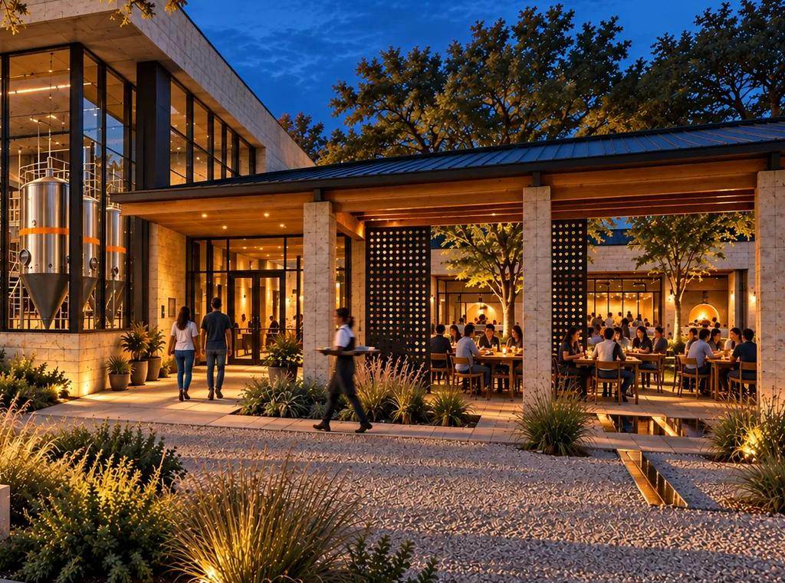
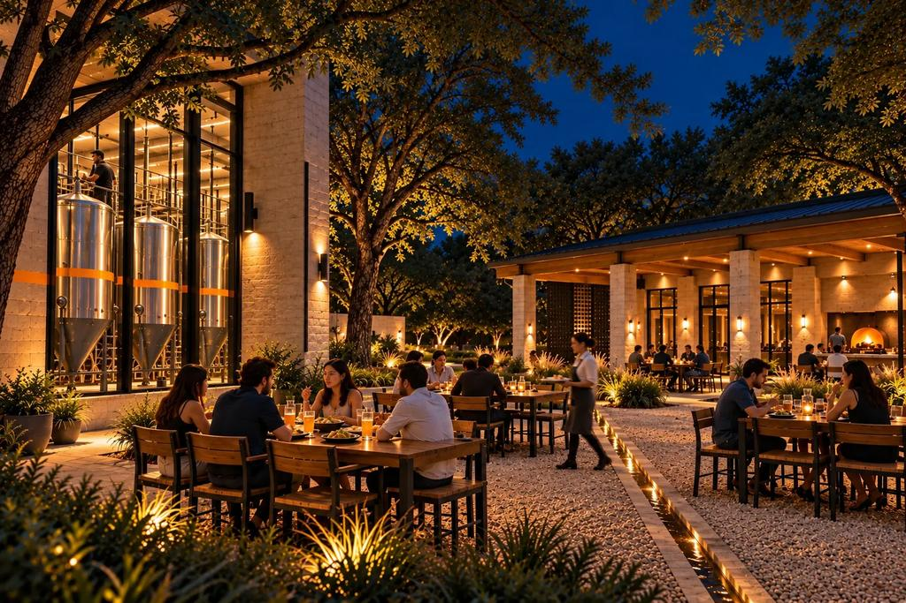

The experience
A night at NASHA.
Arrive, share, see the brewery, raise a glass. Warm, shared and unhurried.

01
Arrival
You come in from the street and the noise drops. The room is warm and low, and the court is just ahead.

02
Share the table
Plates go in the middle. Someone passes the basket. Nobody orders alone.

03
See the brewery
Behind the bar a window shows the tanks. The beer is made just beyond where it is poured.

04
Raise a glass
A tall glass for the wheat beer, a tapered glass for the lagers, a tulip for amber. The same glasses carry the zero-proof drinks.

05
Everyone included
Zero-proof drinks are poured with the same care and meant for the same dishes.

06
Warm service
A server who knows the menu and the pairings, and who stays close without hovering.

The night court
And then the court glows.
No gimmicks and no nightclub. Warm light, good food, the brewery behind glass.
One evening, imagined
Doors open to the last plate.
Doors open
Low sun across the court. A cook lights the oven. The first glasses come off the shelf.
Early tables
Families arrive, with water and juice for the youngest. Plates start to move.
The pairing hour
A wheat beer beside the birria. A lager beside the Chicken 65. A tamarind tea at the next table.
Late dinner
The court quiets to small groups. A final plate of quesadilla wedges.